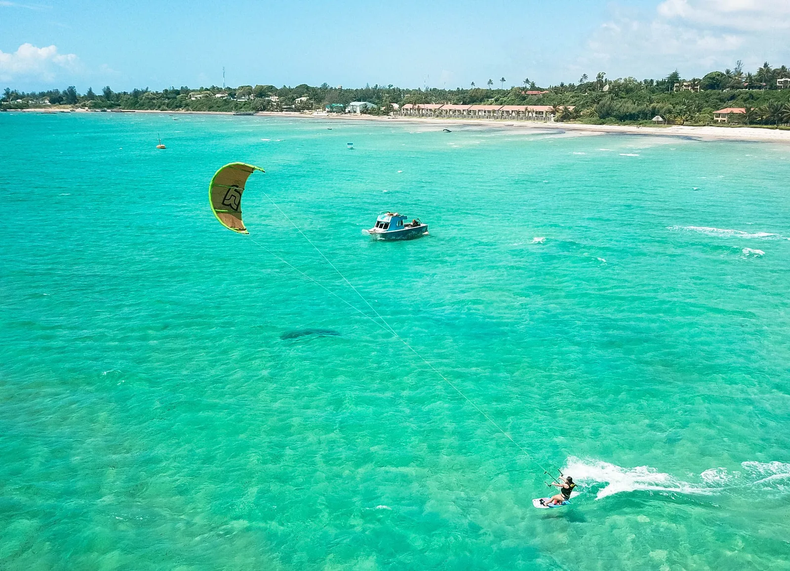
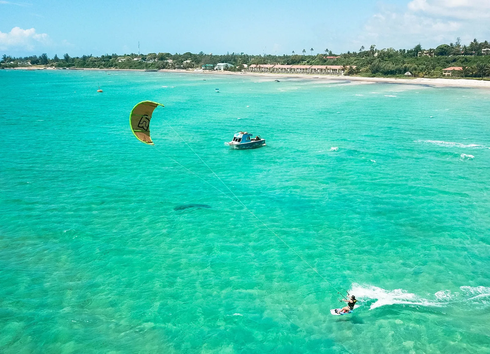

Les Trips Kite
Plus de 2500 km de plages et de spots
Le voyage, l'essence du kite
Le Mozambique est connu comme le pays aux plus belles plages d'Afrique Un réservoir sans fin de spots, vierges, dont la plupart reste à découvrir. Le kitesurf fait partie de ces sports envoutants, passionnants, propices au voyage et à la découverte. Nous vous proposons de vous emmener avec nous. Pour des trips à la journée, sur quelques jours, ou plus :


Trip kite à la Journée
A moins d’1h de Bilene, Au travers des pistes africaines, dans des décors tropicaux, nous croiserons des villages typiques locaux, salués par ses habitants amicaux, aboutir sur une pépite de spot les plus flat qu’il nous ait pu être donné l’occasion de rider.


Trip kite de quelques jours
En fonction de la météo, nous partons sur une ou plusieurs destinations comme Tofo, Inharimé, Zavora, Inhambane… De nombreux spots restent encore à découvrir.
 

Trip kite à la Semaine
En fonction de la météo, nous parcourrons quelques spot du trip « qq jours » mais pousserons plus loin notre exploration jusque Vilanculo, ou notre fameux « secret spot », une pépite de lagune vierge au milieu de nulle part (le digital détox est offert, puisque vous n’aurez pas le choix) Nous logerons dans une « maison chalet » dont le propriétaire, qui l’a construite pour lui et sa famille, nous donne accès. Nous serons au cœur même du spot. La vidéo "qui fait mal aux yeux".